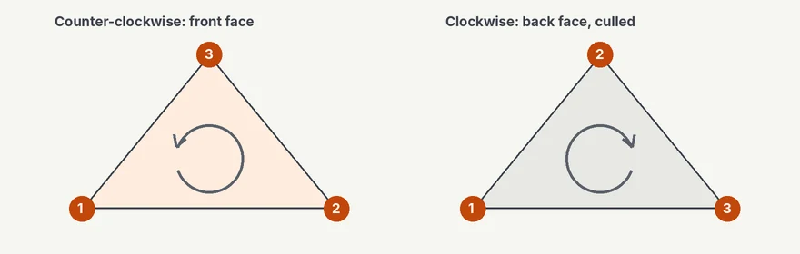

Metal avanzato
Face culling#
Guarda un oggetto chiuso come un cubo da qualsiasi angolo: ne vedi al massimo metà delle facce.
Quelle rivolte dall'altra parte sono sempre nascoste da quelle davanti.
Il face culling dice alla GPU di saltare quei triangoli prima di rasterizzarli, e per le mesh chiuse risparmia circa metà del lavoro sui fragment.
L'ordine dei vertici#
Come fa la GPU a sapere qual è il lato frontale di un triangolo?
Dall'ordine in cui i suoi tre vertici compaiono sullo schermo: orario o antiorario.
Quell'ordine è il winding del triangolo.
Quando giri un triangolo, il suo winding visto dalla camera si inverte.
let vertices: [Float] = [
-0.5, -0.5, 0.0, // 1
0.5, -0.5, 0.0, // 2
0.0, 0.5, 0.0, // 3 -> counter-clockwise when seen from +z
]
const float vertices[] = {
-0.5f, -0.5f, 0.0f, // 1
0.5f, -0.5f, 0.0f, // 2
0.0f, 0.5f, 0.0f, // 3 -> counter-clockwise when seen from +z
};
I modelli vengono esportati con un winding coerente, quindi una sola impostazione vale per un'intera mesh.

Attivare il culling#
Il culling è uno stato del render encoder.
Non fa parte del pipeline state:
encoder.setFrontFacing(.counterClockwise)
encoder.setCullMode(.back)
encoder->setFrontFacingWinding(MTL::WindingCounterClockwise);
encoder->setCullMode(MTL::CullModeBack);
MTLCullMode |
Effetto |
|---|---|
.none |
Disegna entrambi i lati. È il valore predefinito. |
.back |
Salta i triangoli rivolti dall'altra parte. |
.front |
Salta i triangoli rivolti verso la camera. |
In Metal il fronte predefinito è in senso orario
MTLWinding.clockwise è il winding frontale predefinito di Metal, l'opposto di OpenGL.
Il nostro cubo, e la maggior parte dei file di modelli, hanno il fronte in senso antiorario, quindi chiama sempre setFrontFacing(.counterClockwise) insieme a setCullMode.
Se un modello appare rivoltato, con visibili solo le pareti lontane, la causa è questa.
Lo stato dell'encoder si azzera a ogni nuovo encoder, quindi imposta entrambi all'inizio di ogni pass.
Quando non fare culling#
- Geometria piatta a due facce: rettangoli d'erba, foglie, stoffa, finestre.
Per quelle draw call disattiva il culling consetCullMode(.none). - Oggetti chiusi trasparenti: potresti volere che le facce interne si vedano attraverso quelle esterne.
Disegna prima le facce posteriori (culling.front), poi quelle frontali. - Trasformazioni specchiate: una matrice model con una scala negativa su un asse inverte il winding di tutto ciò che disegna.
Per quegli oggetti inverti l'impostazione del fronte.
Scartare le facce frontali#
Ogni tanto scartare le facce frontali è utile di proposito.
Disegnare in una shadow map solo le facce posteriori riduce un artefatto di auto-ombreggiatura, come vedrai in Shadow mapping, e un cubo di skybox visto da dentro si può disegnare con il culling frontale o semplicemente con il culling spento.
Da che parte sono?#
Una fragment function può chiedere se appartiene a un triangolo frontale, usando un input predefinito:
fragment float4 fragment_main(VertexOut in [[stage_in]],
bool isFrontFace [[front_facing]]) {
float3 normal = normalize(in.normal);
if (!isFrontFace) {
normal = -normal; // light the back side correctly
}
...
}
È così che i materiali a due facce vengono illuminati correttamente con il culling spento.
Esercizi#
- Attiva il culling delle facce posteriori e vola dentro un cubo.
Mostra la soluzione
Da fuori non cambia niente.
Appena la camera entra nel cubo vedi solo il colore di sfondo: ora ogni faccia è vista da dietro, e vengono scartate tutte.
La demo interattiva mostra il caso opposto quando scegli.front. - Inverti il winding di una faccia del cubo nei dati dei vertici e osserva quale faccia sparisce.
Mostra la soluzione
Scambia due dei tre vertici di ogni triangolo di quella faccia.
Vista da fuori, ora quella faccia è in senso orario, quindi viene trattata come posteriore e scartata, lasciando un buco attraverso cui vedi l'interno del cubo, che viene scartato anch'esso. - Colora di verde le facce frontali e di rosso quelle posteriori usando
[[front_facing]], con il culling spento.Mostra la soluzione
È lo shader della demo interattiva qui sopra: prendi un parametro
boolmarcato[[front_facing]]e scegli il colore in base a quello.
Se illumini le facce posteriori, inverti la normale.